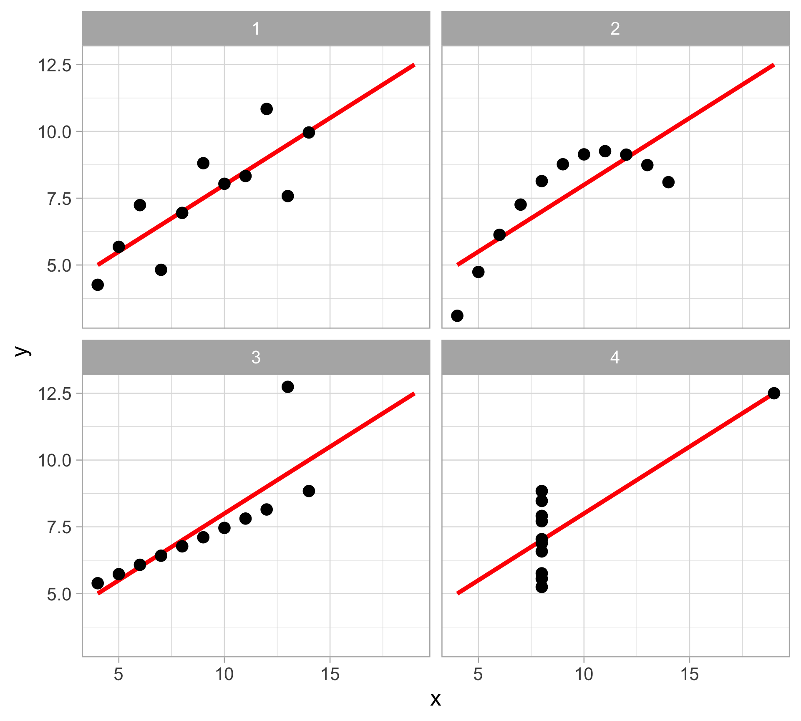
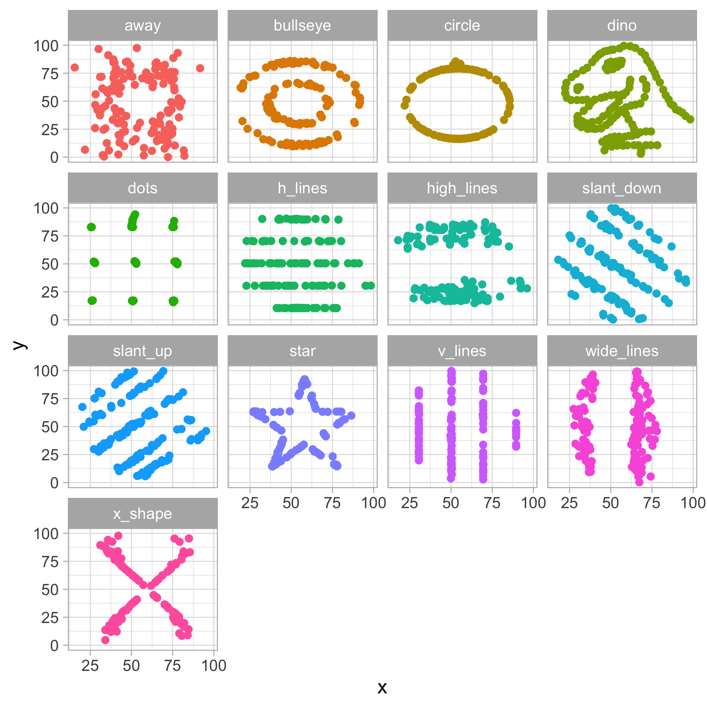
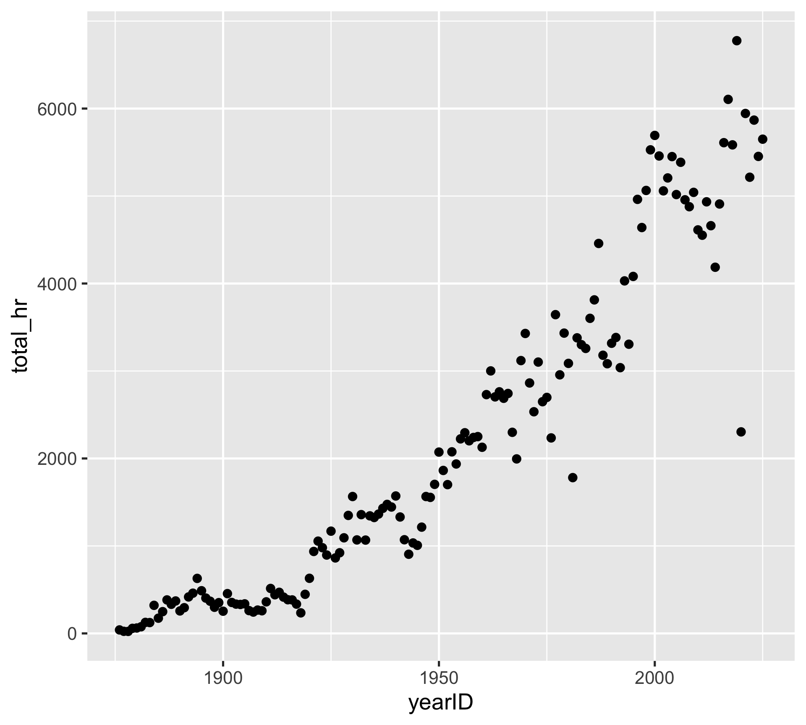
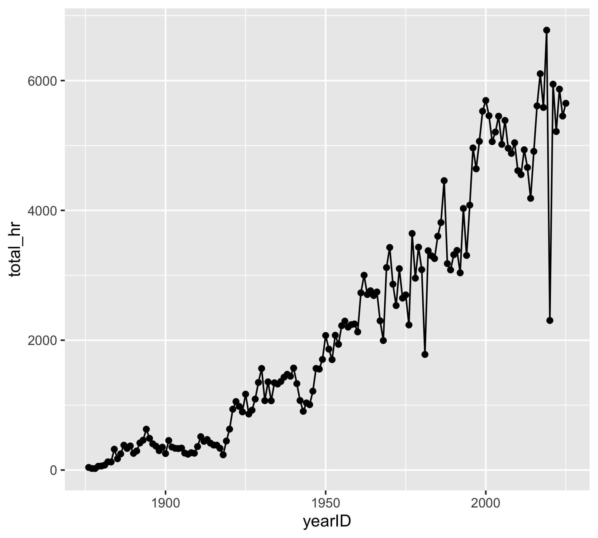
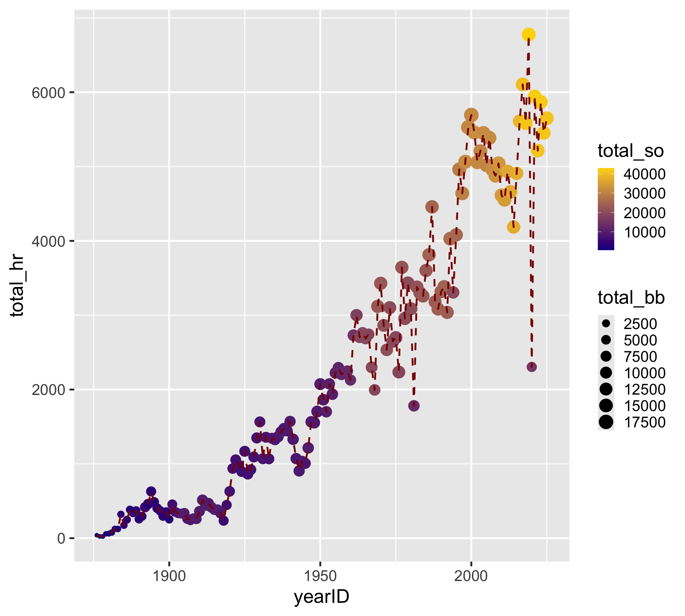
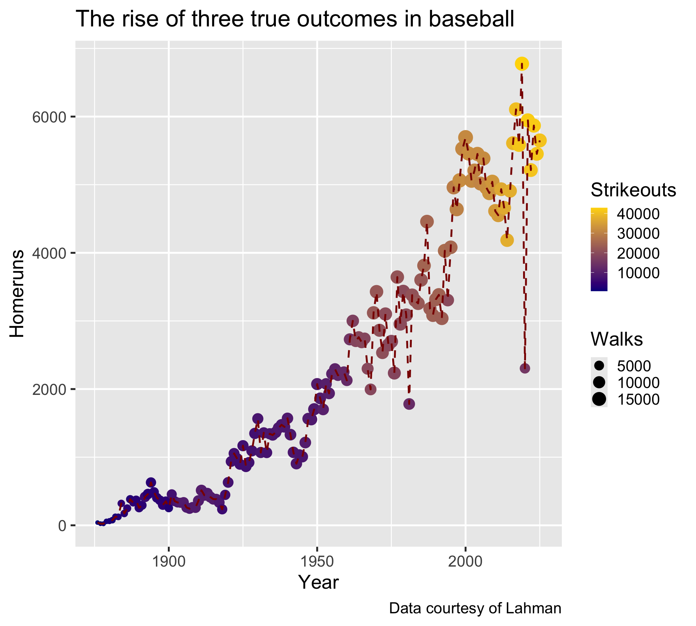
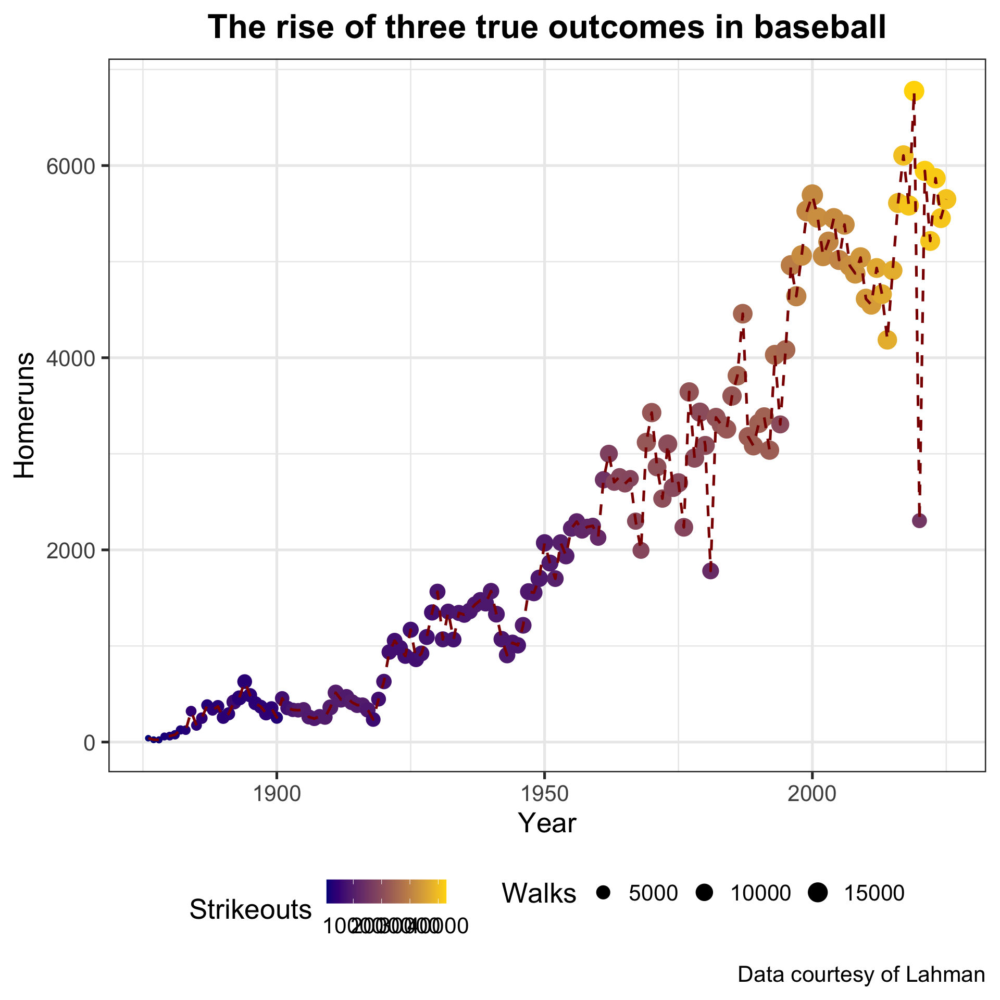
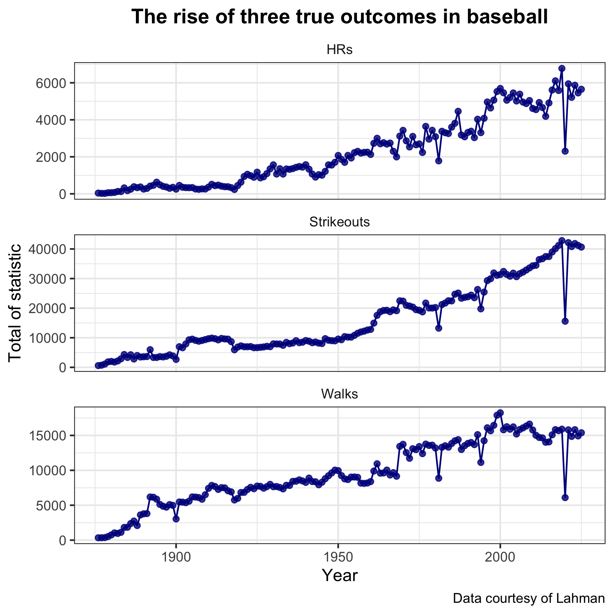

Data visualization: the grammar of graphics and ggplot2
CMSACamp 2026
Department of Statistics & Data Science
Carnegie Mellon University
Motivation and background
Goals of data visualization
- to represent the data in a visual way (enough with tables… though tables are useful in a lot of situations)
- most importantly, to deliver the information to your audience and help them understand the story behind the data
“The greatest value of a picture is when it forces us to notice what we never expected to see” - John Tukey
ALWAYS visualize your data before modeling and analysis
Anscombe’s quartet
| set | x_mean | x_var | y_mean | y_var | x_y_cor |
|---|---|---|---|---|---|
| 1 | 9 | 11 | 7.501 | 4.127 | 0.816 |
| 2 | 9 | 11 | 7.501 | 4.128 | 0.816 |
| 3 | 9 | 11 | 7.500 | 4.123 | 0.816 |
| 4 | 9 | 11 | 7.501 | 4.123 | 0.817 |
ALWAYS visualize your data before modeling and analysis
The Datasaurus dozen

| dataset | x_mean | x_var | y_mean | y_var | x_y_cor |
|---|---|---|---|---|---|
| away | 54.3 | 281.2 | 47.8 | 725.7 | -0.06 |
| bullseye | 54.3 | 281.2 | 47.8 | 725.5 | -0.07 |
| circle | 54.3 | 280.9 | 47.8 | 725.2 | -0.07 |
| dino | 54.3 | 281.1 | 47.8 | 725.5 | -0.06 |
| dots | 54.3 | 281.2 | 47.8 | 725.2 | -0.06 |
| h_lines | 54.3 | 281.1 | 47.8 | 725.8 | -0.06 |
| high_lines | 54.3 | 281.1 | 47.8 | 725.8 | -0.07 |
| slant_down | 54.3 | 281.1 | 47.8 | 725.6 | -0.07 |
| slant_up | 54.3 | 281.2 | 47.8 | 725.7 | -0.07 |
| star | 54.3 | 281.2 | 47.8 | 725.2 | -0.06 |
| v_lines | 54.3 | 281.2 | 47.8 | 725.6 | -0.07 |
| wide_lines | 54.3 | 281.2 | 47.8 | 725.7 | -0.07 |
| x_shape | 54.3 | 281.2 | 47.8 | 725.2 | -0.07 |
Viz crime?
Florence Nightingale’s rose diagram

Viz crime?

Previously…
Yearly MLB batting statistics from Lahman with tidyverse:
- total hits, home runs, strikeouts, walks, at bats
- total batting average for each year
= total H / total AB - only keeps AL and NL leagues
library(tidyverse)
library(Lahman)
yearly_batting <- Batting |>
filter(lgID %in% c("AL", "NL")) |>
group_by(yearID) |>
summarize(total_h = sum(H, na.rm = TRUE),
total_hr = sum(HR, na.rm = TRUE),
total_so = sum(SO, na.rm = TRUE),
total_bb = sum(BB, na.rm = TRUE),
total_ab = sum(AB, na.rm = TRUE)) |>
mutate(batting_avg = total_h / total_ab)How do we make data visualization?
What are the steps to make this figure below?

The grammar of graphics
Key idea: specify plotting “layers” and combine them to produce a graphic
ggplot2provides an implementation of the grammar of graphics
The following layers are building blocks of data graphics . . .
data - one or more datasets (in tidy tabular format)
geom - geometric objects to visually represent the data (e.g. points, lines, bars, etc.)
aes - mappings of variables to visual properties (i.e. aesthetics) of the geometric objects
scale - one scale for each variable displayed (e.g. axis limits, log scale, colors, etc.)
facet - similar subplots (i.e. facets) for subsets of the same data using a conditioning variable
stat - statistical transformations and summaries (e.g. identity, count, smooth, quantile, etc.)
coord - one or more coordinate systems (e.g. cartesian, polar, map projection)
labs - labels/guides for each variable and other parts of the plot (e.g. title, subtitle, caption, etc.)
theme - customization of plot layout (e.g. text size, alignment, legend position, etc.)
A walkthrough of ggplot2
First, start with the data
Specify variables and geometric object
Adding (
+) a geometric layer of points to the plotMap
yearIDto the x-axis andtotal_hrto the y-axis viaaes()Implicitly using
coord_cartesian()

Now, can we add another geometric layer?
Adding (
+) a line geometric layerInclude mappings shared across geometric layers inside
ggplot()

Scaling axes: changing axis label breaks
Scaling axes: customizing axis limits
Scaling axes: having different axis scales
Adding a statistical summary
Mapping additional variables
Customizing mappings by layer
Changing aesthetics without mapping variables
Further refining the color and size
There are lots of different scale_color_XYZ() and scale_size_XYZ() functions to check out!

Always label your plots! (seriously…)
yearly_batting |>
ggplot(aes(x = yearID, y = total_hr)) +
geom_point(aes(color = total_so, size = total_bb)) +
geom_line(color = "darkred", linetype = "dashed") +
scale_color_gradient(low = "darkblue", high = "gold") +
labs(
x = "Year",
y = "Homeruns",
color = "Strikeouts",
size = "Walks",
title = "The rise of three true outcomes in baseball",
caption = "Data courtesy of Lahman"
)Each mapped aesthetic can be labeled

Custom theme
yearly_batting |>
ggplot(aes(x = yearID, y = total_hr)) +
geom_point(aes(color = total_so, size = total_bb)) +
geom_line(color = "darkred", linetype = "dashed") +
scale_color_gradient(low = "darkblue", high = "gold") +
labs(
x = "Year",
y = "Homeruns",
color = "Strikeouts",
size = "Walks",
title = "The rise of three true outcomes in baseball",
caption = "Data courtesy of Lahman"
) +
theme_bw(base_size = 20) +
theme(legend.position = "bottom",
plot.title = element_text(hjust = 0.5,
face = "bold"))For more theme options, check out the ggthemes and hrbrthemes packages

Bonus: set the theme for your whole document!
Sometimes, it gets tiring to add theme_bw() or some complex call of theme() to every plot in a document.
- In these situations, set theme at the top of your document!
- At any time, you can use a typical
theme()call to override these choices.
A lesson about data visualization…
- So far we’ve plotted total home runs across the years, with point size representing total walks and point color representing total strikeouts
- Simpler is better. What can we do to improve and make the plot simpler?
How about creating three separate plots for home runs, strikeouts, and walks, with each mapped to the y-axis?
But how do we do this without repeating the same code?
Pivoting
Remember: data should be in tidy format
Within the tidyverse, the tidyr package offers functions for reshaping the data
pivot_longer: casts/gathers information spread out across variablestransforms data from wide format into long format
increase number of rows and decrease number of columns
pivot_wider: melts/spreads information out from observationstransforms data from long format into wide format
decrease number of rows and increase number of columns
Pivoting
# A tibble: 450 × 3
yearID stat val
<int> <chr> <int>
1 1876 HRs 40
2 1876 Strikeouts 589
3 1876 Walks 336
4 1877 HRs 24
5 1877 Strikeouts 726
6 1877 Walks 345
7 1878 HRs 23
8 1878 Strikeouts 1081
9 1878 Walks 364
10 1879 HRs 58
# ℹ 440 more rowsWe’ve pivoted the data and created the following variables
stat, to represent the name of the batting statisticsval, to represent the total value of each statistic in each year
Faceting
yearly_batting |>
select(yearID, HRs = total_hr,
Strikeouts = total_so, Walks = total_bb) |>
pivot_longer(HRs:Walks,
names_to = "stat",
values_to = "val") |>
ggplot(aes(yearID, val)) +
geom_line(color = "darkblue") +
geom_point(alpha = 0.8, color = "darkblue") +
facet_wrap(~ stat, scales = "free_y", ncol = 1) +
labs(
x = "Year",
y = "Total of statistic",
title = "The rise of three true outcomes in baseball",
caption = "Data courtesy of Lahman"
) +
theme_bw(base_size = 20) +
theme(strip.background = element_blank(),
plot.title = element_text(hjust = 0.5,
face = "bold"))Create a multi-panel plot faceted by a conditioning variable (in our case, stat)

Exercise
The babynames package contains a dataset (also) named babynames, which contains information on the number of children of each sex given each name from 1880 to 2017, provided by the United States Social Security Administration.
How does the popularity (in terms of frequency) of your own name (combination of name and sex) change over time? Also, stick a thick, red, vertical dashed line on the plot at your birth year (try geom_vline()).
Next, pick two other names and compare their popularity over time with your own name.
Resources
ggplot2website: cheatsheets, FAQs, extensions, and more